| 心理学のためのサンプルサイズ設計入門 |
| 心理学のためのサンプルサイズ設計入門 |
実験群では 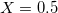、統制群では 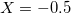 となるようなエフェクトコーディングを考えて、以下のような2つのモデルを作る。
| 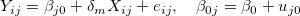 |
| 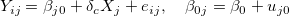 |
 と効果量
と効果量 上記のモデルでいずれも
| 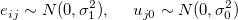 |
とする。 このとき、級内相関は
| 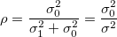 |
であり、
0.05: 小
0.10: 中
0.15: 大
とする目安がある。[3]
また、効果量を標準化された平均値差として
| 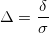 |
によって定義する。
帰無仮説 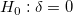 を検定するために、検定統計量
| 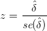 |
を用いる。
このとき、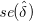 は
MRT: 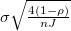
が大きいほど群間の等質性が高まる（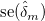 は小さくなる）
CRT: 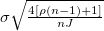
が大きくなると群間の等質性は満たされにくい（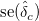 は大きくなる）
である。
一般に
| 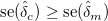 |
であり、また の方が の影響を受けやすい。
| 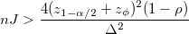 |
ただし、検定力を 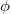 とする。
MRTの場合は、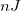 が同じであれば検定力は変わらない。よって、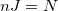 として検定力分析できる。
| 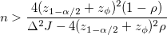 |
| 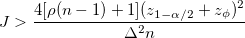 |
効果量 のCI幅を 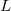 未満に抑えることを考える。
| 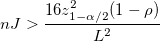 |
| 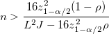 |
| 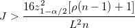 |
によってサンプルサイズは大きく左右される
が小さく が一定以上の場合、いくら  を増やしてもCI幅を 以下に抑えることはできない
を増やしてもCI幅を 以下に抑えることはできない
はてな？
この方法では、サンプルサイズが定まればCI幅は一位に定まるようになっている。検定力と異なりCIはそれ自体が確率変数であるから、どれくらいの確率でこの幅に収まるのか、評価できないと厳しい。
はてな？ここまで
Footnotes
| 心理学のためのサンプルサイズ設計入門 |